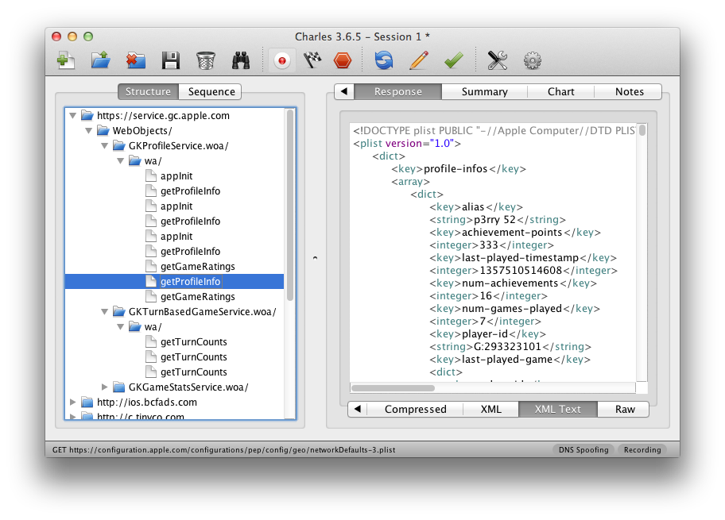

written on Sunday, January 6, 2013
Yesterday I was in the situation where I wanted to debug an iOS device and what network calls it would make. Normally the trivial step is to just define an HTTP proxy server in the wifi settings but that will only work for as long as you have something that actually honors this proxy server. But there are better ways to transparently proxy connections from a device connected via Wifi which does not require any changes on the actual device.
In order for this to work you need a device running OS X which is connected to the same network as the Wifi. Then you need to convince the Wifi device to see you as the gateway instead of the actual gateway. The easiest way is just to go to the settings and change the gateway to your computer's IP. The second ingredient is an HTTP proxy, ideally one that can also decrypt and reencrypt SSL traffic. Personally I can recommend Charles for that. Lastly you will need another proxy that can work transparently which sits between your device and Charles. On OS X redsocks gets this job done.
If you don't want to spend the money on Charles or you want to rewrite traffic with Python you can use mitmproxy.
The first thing you will notice is that when you point your Wifi device to your computer it will loose network connectivity. That's because by default your computer won't forward packets. This can easily be changed through sysctl:
$ sudo sysctl -w net.inet.ip.forwarding=1
After that you should be able to browse the internet again on your Wifi device.
The second step is installing redsocks. If you have brew that's a very trivial operation:
$ brew install redsocks
Once installed you will need to create a config file for it. Call it redsocks.conf and place it in a folder from which you run redsocks:
base {
log_debug = on;
log_info = on;
log = stderr;
daemon = off;
redirector = generic;
}
redsocks {
local_ip = 0.0.0.0;
local_port = 12345;
ip = 127.0.0.1;
port = 8889;
// known types: socks4, socks5, http-connect, http-relay
type = socks5;
}
Since I'm using Charles I take advantage of it's socks5 support and point it to localhost:8889 where Charles normally starts up if configured as Socks5 proxy. If you're using a regular HTTP proxy you can use http-connect as proxy type. The local_port defines where the actual transparent redsocks proxy opens.
All you have to do then is to start it:
$ redsocks
After that you will need to point all the traffic that is not from your computer and from port 80 and 443 of your Wifi through redsocks. On OS X the firewall canbe controlled through ipfw. In my case the wifi device is en1:
$ sudo ipfw add fwd 127.0.0.1,12345 tcp from not me to any 80 in via en1 $ sudo ipfw add fwd 127.0.0.1,12345 tcp from not me to any 443 in via en1
Now currently if you finish that above setup you will notice that nothing actually works. The cause for this is a Bug in the OS X kernel that requires flipping the net.inet.ip.scopedroute flag to 0. I am not entirely sure what it does, but the internet reports that it breaks network sharing through the user preferences. In any case it fixes ipfw based forwarding so you can flip it with sysctl:
$ sudo sysctl -w net.inet.ip.scopedroute=0
Unfortunately in OS X Lion this flag can actually not be flipped from userspace so you need to set it as boot parameter and then restart your computer. You can do this by editing the /Library/Preferences/SystemConfiguration/com.apple.Boot.plist file:
<?xml version="1.0" encoding="UTF-8"?>
<!DOCTYPE plist PUBLIC "-//Apple//DTD PLIST 1.0//EN"
"http://www.apple.com/DTDs/PropertyList-1.0.dtd">
<plist version="1.0">
<dict>
<key>Kernel Flags</key>
<string>net.inet.ip.scopedroute=0</string>
</dict>
</plist>
After all that your HTTP traffic should show up in your SSL interception proxy. SSL will only work if the application on your Wifi device is trusting your SSL interception proxy's CA. For browsers for instance that's trivial to change. The Charles Certificate can be added to the trust store by following this link: charles.crt. Note that this will not work with applications that don't use the system's CA trust store. In that case you will need to recompile your application so that it trusts the Charles CA.
